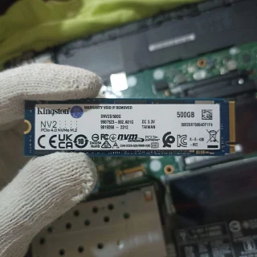
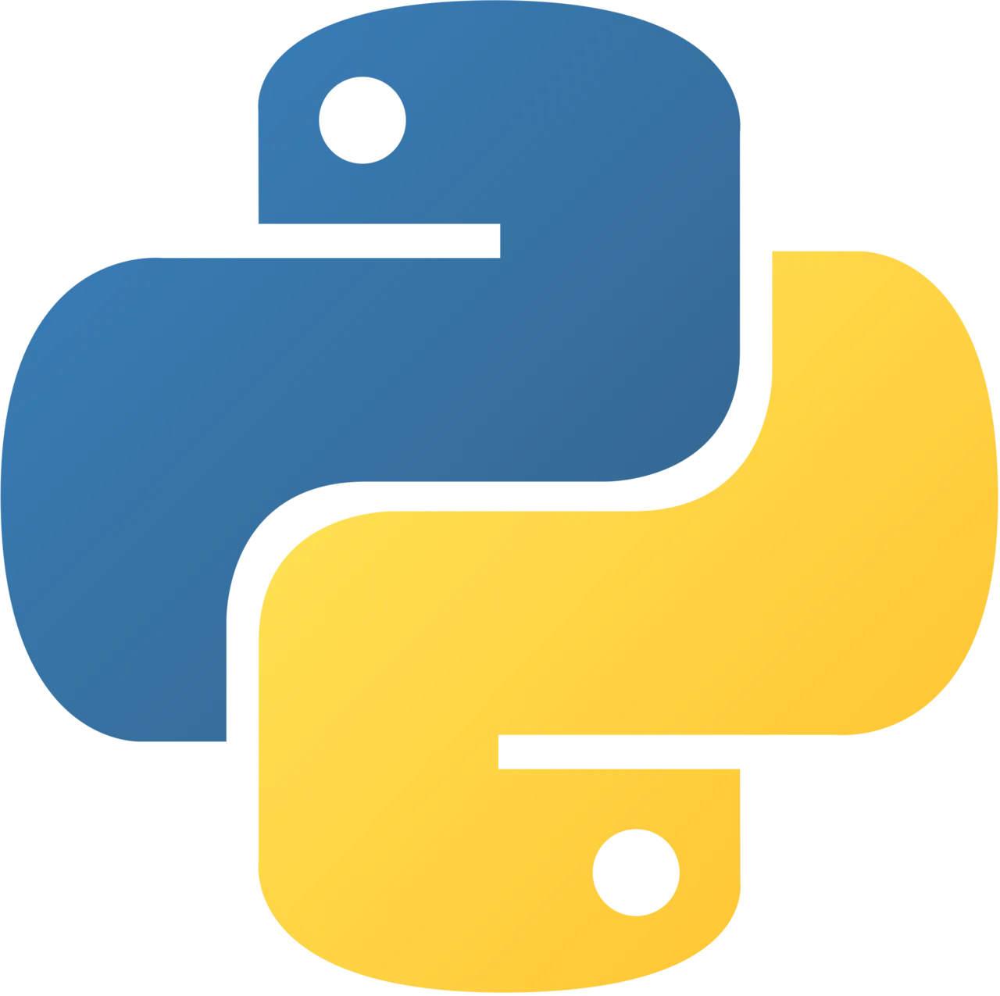
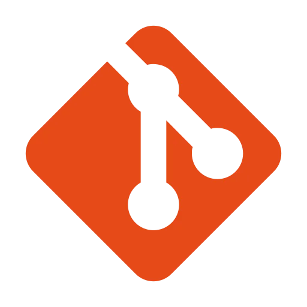
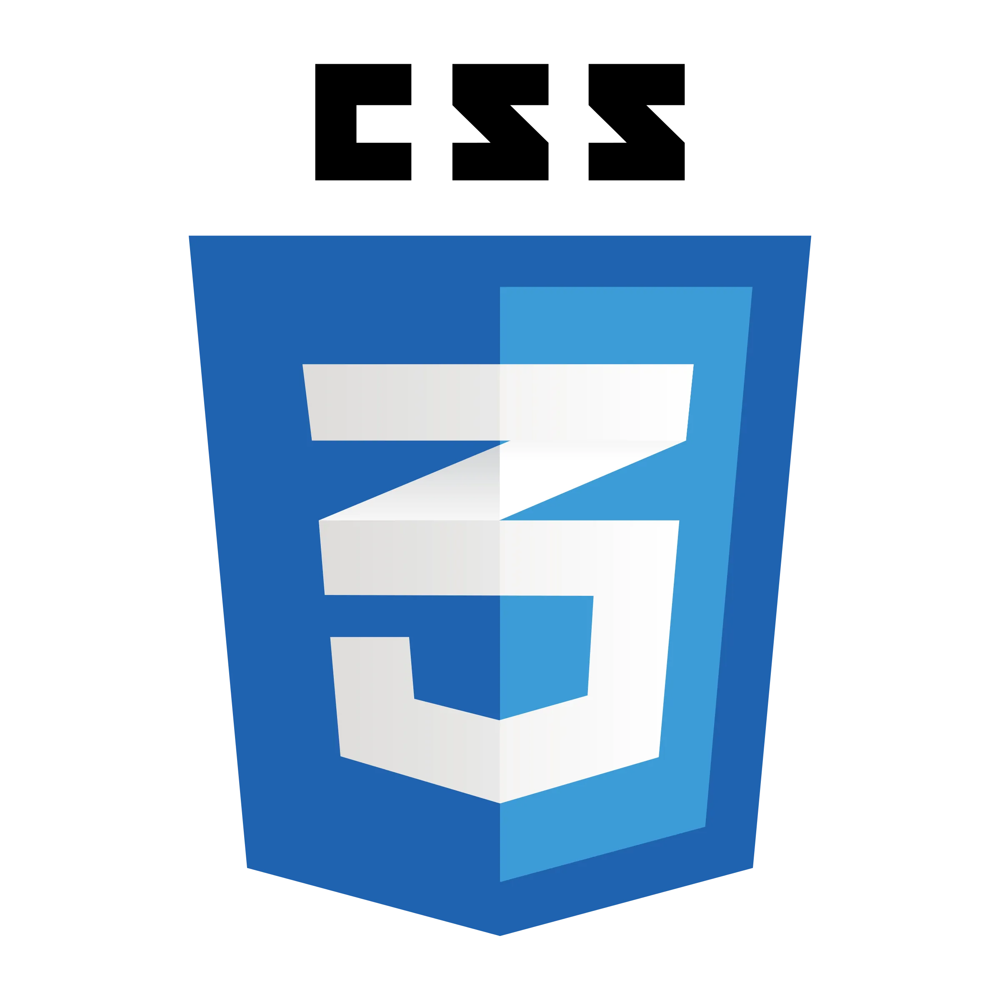
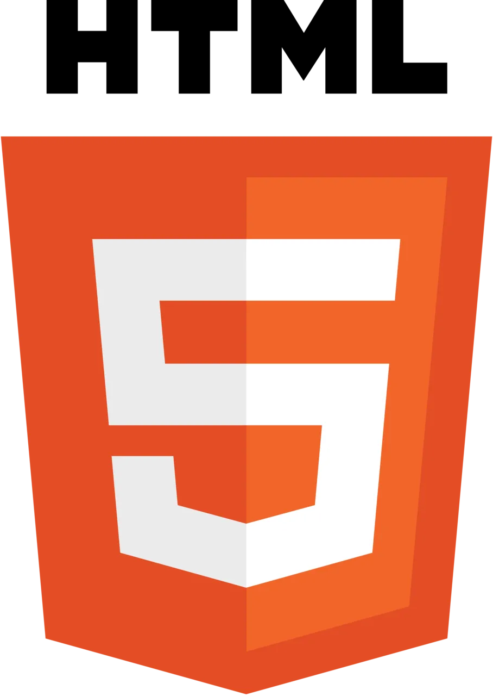
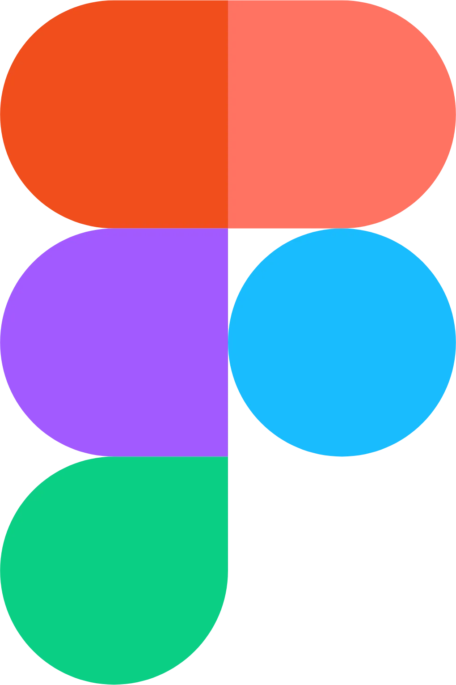

Junior Developer focused on creating solutions with Python.

I'm a developer with around two years of experience, primarily focused on Python, for both simple projects and scripting tasks. I also have basic knowledge of HTML and CSS, allowing me to enhance my projects with simple interfaces.
I'm an adaptable person with a strong desire to learn and share knowledge. I enjoy tackling problems and finding practical solutions, relying on experimentation and continuous improvement. Although my professional experience is limited, I've participated in collaborative environments in various contexts, which has helped me develop communication skills and adapt to teamwork.
What motivates me most about software development is the combination of programming, design, and architecture. I'm interested not only in writing code but also in understanding how to structure solutions efficiently. In the future, I aim to establish myself as a software developer while continuing to explore other tools and areas that complement my profile, such as Linux and design tools like Figma, always maintaining an open mind and a commitment to continuous learning.

Python
Git
CSS
HTML
Figma